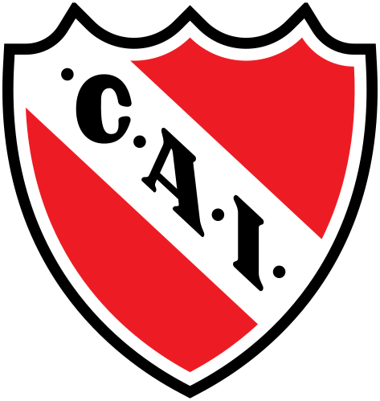
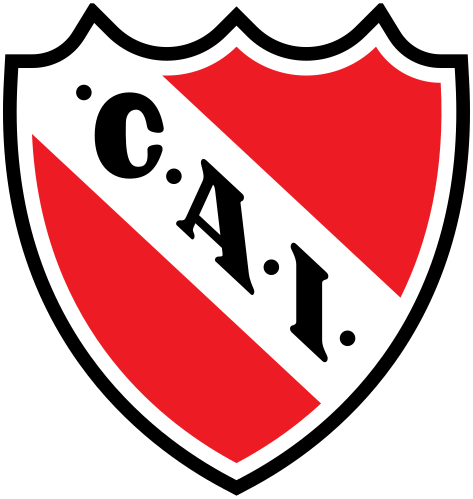

Equipos de la Primera División de Argentina
 

La Primera División de Argentina es el torneo de la primera categoría del fútbol masculino argentino, organizado desde 1893 por la Asociación del Fútbol Argentino, excepto entre las temporadas 2017-18 y 2019-20, cuando fue regido por la Superliga Argentina. Disuelta esta, la Asociación creó el órgano interno denominado Liga Profesional de Fútbol Argentino, a través del cual retomó su conducción. Es el máximo escalón del sistema de competiciones del fútbol masculino en el país.